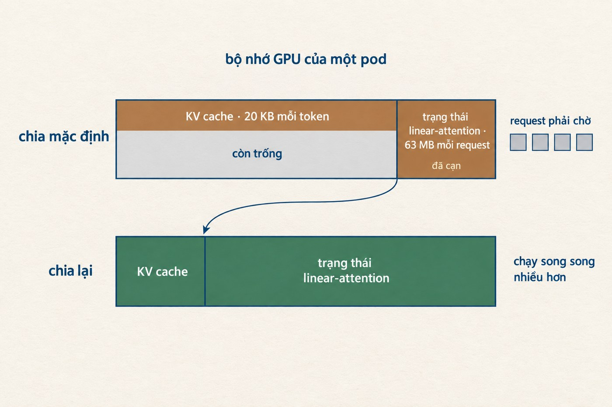
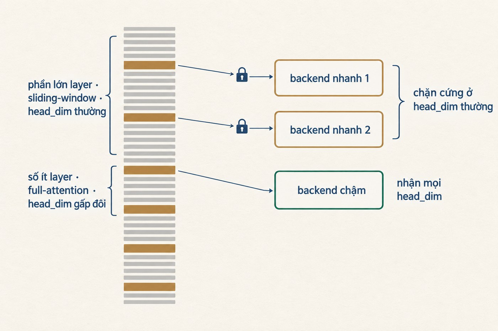
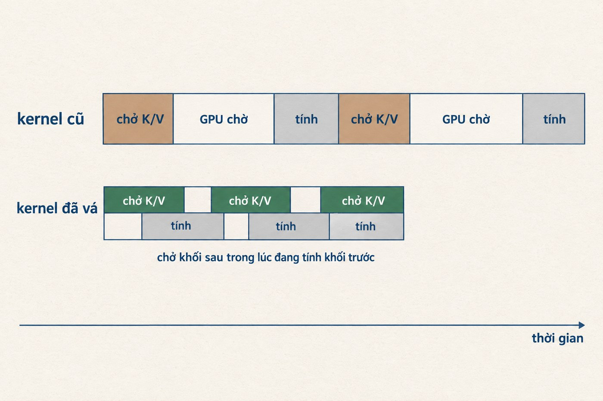

Một lần đổi engine, không đổi gì khác
misa-ai-1.1 phục vụ khoảng một triệu request mỗi ngày trên cụm GPU nội bộ. Đây là model MoE 35 tỷ tham số, kiến trúc hybrid linear-attention, trọng số FP8.
Khi nâng cấp, tôi giữ nguyên mọi thứ trừ engine: trọng số, context length, memory fraction, chunked prefill size, phần GPU được cấp, và cả hai bản đều không bật speculative decoding. Tôi muốn biết chắc phần nhanh lên đến từ đâu, nên chỉ đổi đúng một biến.
Kết quả trên traffic thật
Prefill là lúc engine đọc hết input, và đây là quãng chờ trước khi có token đầu tiên. Decode là lúc model sinh câu trả lời, mỗi lần một token. Hai giai đoạn giành nhau cùng một GPU, nên engine quyết định cả thời gian chờ lẫn tốc độ sinh token.
Bản mới nhanh hơn ở cả hai. Chênh lệch lớn nhất nằm ở prefill, và đó cũng là phần người dùng cảm thấy rõ nhất.

Decode nhanh hơn ở mọi mức tải đo được, và khoảng cách nới rộng đúng lúc tải lên cao.

Tính theo mức trung vị đo được, một response 300 token đi từ 2,8 xuống 1,2 giây. Quãng chờ trước token đầu tiên: 0,88 xuống 0,10 giây. Thời gian nằm hàng đợi: 0,099 xuống 0,005 giây.
Request hoàn tất sớm thì giải phóng GPU sớm, nên cùng một pod phục vụ được 194 nghìn request mỗi ngày thay vì 88 nghìn.
Nếu sản phẩm của bạn đang gọi misa-ai-1.1, đây là phần bạn thấy ngay mà không phải sửa gì: câu trả lời bắt đầu hiện gần như tức thì thay vì sau gần một giây, và cùng lượng GPU đó chịu được gấp đôi lượng người dùng.
Đã sửa gì trên misa-ai-1.1
Bốn thay đổi, tất cả nằm ở tầng engine. Tôi không đụng vào weights, tokenizer hay chat template, và các service gọi sang nó cũng không sửa dòng code nào.
Một, nâng container image. Bản mới cách bản cũ khoảng hai tháng phát triển upstream.
Hai, cho lớp linear-attention một kernel đọc prompt viết riêng. Model là kiến trúc hybrid, phần lớn layer dùng linear attention, nhưng cấu hình cũ không khai báo backend cho nhóm này nên chúng chạy bằng kernel chung, vốn viết cho kiểu attention khác. Kernel mới viết đúng cho loại layer đó, và với prompt rất dài thì được phép bỏ qua phần không cần đọc lại.
Ba, chia lại bộ nhớ GPU. Model hybrid này cần hai vùng nhớ co giãn theo hai thứ khác hẳn nhau.
Các layer full-attention phải nhớ nguyên văn: mỗi token đọc vào thì cất thêm cặp K và V của token đó, nên vùng này dày lên theo từng token, khoảng 20 KB mỗi token. Đây là KV cache.
Các layer linear-attention thì không giữ lịch sử. Mỗi layer mang theo một ma trận cố định, và mỗi token mới đi qua chỉ cập nhật vào ma trận đó chứ không ghi thêm dòng nào. Đọc 10 nghìn hay 100 nghìn token thì ma trận vẫn đúng chừng ấy ô. Với model này là 30 layer như vậy, cộng lại khoảng 63 MB cho mỗi request đang chạy, và con số đó không đổi dù prompt dài hay ngắn.
Engine chia bộ nhớ GPU cho hai vùng theo một tỉ lệ mặc định. Với tải của MISA, thứ đẩy tới giới hạn là số request chạy song song chứ không phải độ dài prompt: mỗi request chiếm đủ 63 MB kể cả khi nó chỉ hỏi một câu ngắn. Vùng đó cạn trước trong khi KV cache còn thừa chỗ, nên request mới phải xếp hàng dù GPU vẫn còn bộ nhớ trống. Dời ranh giới theo số đo thật thì cả hai vùng cùng dùng hết, và độ dài context giữ nguyên.

Bốn, bật nhóm sparse prefill kernel cho lớp full-attention, loại kernel dành cho context rất dài và có ngưỡng kích hoạt theo độ dài KV cache.
Prefill nhanh lên chủ yếu nhờ thay đổi thứ hai. Nhìn file cấu hình thì khó đoán, vì thay đổi thứ tư chiếm số dòng gấp bảy lần.
Tốc độ đến từ đâu
Nhóm flag sparse prefill là ứng viên rõ ràng nhất: kernel viết cho context rất dài, bật lên thì prefill nhanh, câu chuyện khép kín. Trước khi ghi công, tôi đi kiểm điều kiện để nó thực sự chạy. Nó chỉ chạy khi KV cache của một request vượt 95.000 token.

Sáu ngày, gần sáu triệu request, đúng 60 cái chạm ngưỡng. Sparse prefill gần như chưa bao giờ chạy, và toàn bộ mức tăng prefill thuộc về nhóm layer linear-attention, nhóm nằm trên đường đi của mọi request.
Quy sai nguyên nhân thì lần sau cả bộ flag sparse-prefill sẽ được áp thẳng sang một model full-attention, mà ở đó nó không bao giờ chạy. Ai định mang bộ flag này sang model khác, đọc lại đoạn ngưỡng 95.000 token trước đã. Chọn cấu hình serving theo kiến trúc model và kiểu tải thật, đừng đếm xem bật được bao nhiêu flag.
Cùng đợt đó, misa-ai-2.0
misa-ai-2.0 là model đa phương thức 26 tỷ tham số, tôi chuyển sang sglang trong cùng đợt. Lần này phần việc nặng hơn: trước khi đổi được backend attention, phải sửa chính engine.
sglang có bốn backend attention, và trên H200 thì Gemma 4 chỉ dùng được cái chậm nhất. Lý do nằm ở cấu trúc model: 25 trong 30 layer là sliding-window với head_dim 256, còn 5 layer full-attention chạy ở head_dim 512 vì gộp K với V làm một tensor. Hai backend nhanh nhất chặn cứng head_dim ở 256 nên từ chối thẳng. Backend còn lại nhận được 512 nhưng chưa bao giờ nạp nổi trong image đang dùng.

Tôi viết hai bản vá để gỡ chỗ đó. Bản thứ nhất sửa kernel chậm: nó đặt cứng số khối K/V được chở song song với việc tính là một, tức chở một khối, chờ về, tính xong rồi mới chở khối sau, và suốt lúc chờ thì phần tính của GPU ngồi không. Khối ở head_dim 512 nặng gấp đôi nên khoảng ngồi không cũng dài gấp đôi. Bản vá cho kernel chọn số khối theo head_dim thay vì đặt cứng.

Bản thứ hai làm cho backend nhanh nạp được. Thư viện flash-attn có nhiều phiên bản giao diện hàm, và thay vì hỏi thẳng bản đang cài, nó đoán theo biến môi trường CUDA_VERSION. Trên image này nó đoán sai, gọi hàm sai kiểu, và mọi model head_dim lớn vỡ ngay ở bước dựng CUDA graph, không cờ nào né được. Bản vá bỏ phần đoán, đọc thẳng chữ ký hàm thật.
Sau hai bản vá, model chạy được trên backend nhanh, và CompactAttention dựng tiếp trên nền đó. Thay vì quét toàn bộ prefix ở mỗi bước, CompactAttention chia prefix thành từng khối rồi chỉ giữ lại các khối quan trọng nhất, và chỉ bật khi prefix vượt 8.192 token. Kết quả trực tiếp: đọc 152.000 token trong 9,6 giây.
Thấy nhanh hơn chưa đủ để chuyển. Cuối tháng 8, một lượt đo riêng trên 1×H200 với prompt 27,6 nghìn token không dùng lại cache cho thấy sglang nhanh hơn vLLM 1,15 lần, thêm ba bản vá kernel thì lên 1,27 lần. Chừng đó không đáng để đánh đổi một lần chuyển production, nên tôi giữ nguyên hiện trạng và đi tìm phần còn thiếu.
Phép thử quyết định là chạy lại đúng chuỗi request của sự cố ngày 4 tháng 9, ép nhanh gấp 2,5 lần so với lúc nó xảy ra thật. Tôi muốn biết bản mới có chịu được đúng cái đã làm sập bản cũ hay không.

Lên production, hàng đợi giảm đúng như lúc đo thử: thời gian chờ tới lượt từ 0,297 giây xuống 0,005 giây.
Ba workload cùng phục vụ bộ trọng số đó đều khai served-model-name giống hệt nhau, nhưng mỗi cái một api-key. Gateway vì thế chia cho chúng ba luồng traffic khác hẳn nhau, input trung bình 10.159, 8.714 và 14.272 token. Bản mới đang xử lý lượng prefill gấp mười lần bản cũ, 1.350 so với 126 token mỗi pod mỗi giây, mà hàng đợi vẫn gần như trống.
Tóm lại
Một lần thay image, thêm vài dòng cấu hình, quãng chờ token đầu tiên ngắn đi chín lần và mỗi pod phục vụ gấp đôi số request. Toàn bộ số liệu lấy từ traffic thật trong sáu ngày, và đã chia lại theo đúng số pod mà mỗi bản đang chạy.
Phần lớn cụm GPU ở đâu cũng đang chạy dưới sức của nó, và thứ chặn lại thường không phải phần cứng. Hạ tầng giờ chịu được gấp đôi tải trên cùng số GPU, nên hãy đẩy sản phẩm của bạn tới giới hạn mới đó và cho tôi biết chỗ nào còn nghẽn.
Ghi chú
- Con số bảy lần trộn hai loại thống kê (trung bình uncached token chia cho TTFT p50) nên chỉ nên hiểu là khoảng chừng đó, không phải một hệ số chính xác. Chiều thì chắc chắn: 0,879 so với 0,098 giây, trong khi input bản mới chỉ ngắn hơn 25%.
- Con số 2,8 xuống 1,2 giây tính từ TTFT p50 cộng 300 lần ITL median ở dải concurrency 1 tới 2, không phải đo thẳng một request cụ thể. Hai workload phục vụ client khác nhau nên không so thẳng latency đầu cuối được.
- Hình minh họa và biểu đồ trong bài dựng bằng gpt-image-2.5. Mọi con số in trên biểu đồ đã đối chiếu lại với số liệu gốc.
- Bài viết không liệt kê chi tiết flag và giá trị tuning của cấu hình serving.